대기환경기사 (2007-09-02 기출문제)
1과목: 대기오염 개론
1. 분진의 농도가 0.075mg/m3인 지역의 상대습도가 70%일 때, 가시거리는? (단, 계수 = 1.2로 가정)
- 4km
- 16km
- 30km
- 42km
(정답률: 81%)

2. 다음 중 포름알데히드를 배출하는 주요 업종과 가정 거리가 먼 것은?
- 타르공업
- 합성수지공업
- 피혁제조공업
- 포르말린제조공업
(정답률: 64%)
3. 다음 설명과 가장 관련이 깊은 대기오염물질은?
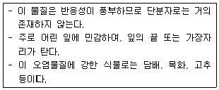
- 일산화탄소
- 염소 및 그 화합물
- 오존 및 옥시던트
- 불소 및 그 화합물
(정답률: 79%)
4. 다음이 설명하는 것은?
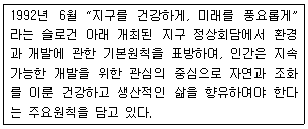
- 바젤 협약
- 몬트리올의정서
- 교토의정서
- 리우선언
(정답률: 88%)
5. 해륙풍에 관한 다음 설명 중 옳지 않은 것은?
- 낮에는 육지에서 바다로 바람이 분다.
- 해풍은 바다에서 육지로, 육풍은 육지에서 바다로 분다.
- 바다와 육지의 비열차에 의해 발생한다.
- 해풍은 육풍보다 영향을 미치는 거리가 일반적으로 길다.
(정답률: 75%)
6. 바람을 일으키는 힘 중 「전향력」에 관한 설명으로 가장 거리가 먼 것은?
- 지구의 자전에 의해 생기는 히을 전향력이라 한다.
- 전향력은 극지방에서 최소가 되고 적도 지방에서 최대가 된다.
- 북반구에서는 항상 움직이는 물체의 운동방향의 오른쪽 90°방향으로 작용한다.
- 전향력의 크기는 위도, 지구자전 각속도, 풍속의 함수로 나타난다.
(정답률: 75%)
7. 질소화합물에 관한 설명으로 가장 거리가 먼 것은?
- 전세계 질소화합물의 배출량 중 인위적인 추정 배출량은 약 70 ~ 80% 정도로, 연간 총 배출량은 주로 배출원별로는 난방, 연료별로는 석탄사용이 제일 큰 비중을 차지한다.
- N2O는 대류권에서는 온실가스로 알려져 있으며 성층권에서는 오존층 파괴 물질로 알려져 있다.
- 연료중의 질소화합물은 일반적으로 천연가스보다 석탄에 많다.
- 대기중에서의 추정 체류시간은 NO와 NO2가 약 2~5일, N2O가 약 20~100년 정도이다.
(정답률: 75%)
8. 일산화탄소(CO)에 관한 설명으로 옳지 않은 것은?
- 토양 박테리아의 활동에 의하여 이산화탄소로 산화되어 대기 중에서 제거된다.
- 물에 잘 녹아 강우에 의한 영향이 크며, 다른 물질에 대한 흡착이 강하다.
- 대류권 및 성층권에서의 광화학반응에 의해 대기중에서도 제거된다.
- 대기중에서 평균 체류시간은 발생량과 대기 중 평균농도로부터 약 1~3개월 정도로 추정된다.
(정답률: 71%)
9. Richardson(Ri)의 크기가 아래와 같을 때, 대기의 혼합상태로 옳은 것은?
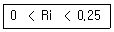
- 성층(stratification)에 의해서 약화된 기계적 난류가 존재한다.
- 대류에 의한 혼합이 기계적 혼합을 지배한다.
- 수직방향의 혼합이 없다.
- 기계적 난류와 대류가 존재하나 기계적 난류가 혼합을 주로 일으킨다.
(정답률: 75%)
10. 다음 중 오염물질의 체류시간이 긴 순서대로 옳게 나열된 것은? (단, 긴시간 ＞짧은 시간)
- N2 ＞CO2＞H2 ＞CO
- N2 ＞CO ＞CO2 ＞H2
- CO2 ＞N2 ＞H2＞CO
- CO2 ＞H2 ＞N2 ＞CO
(정답률: 75%)
11. 내경이 2m이고 , 실제높이가 45m 인 연돌에서 15m/sec로 배출되는 배기가스의 온도는 127℃ , 대기중의 공기압은 1기압 , 기온은 27℃이다. 연돌 배출구에서의 풍속이 5m/sec 일 때 , 유효연돌높이는? (단, Holland의 연기 상승높이 결정식은 다음과 같다.)
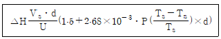
- 74.1m
- 67.1m
- 65.1m
- 62.1m
(정답률: 77%)
12. 1~2㎛이하의 미세입자는 세정(Rain out)효과가 작은데 , 그 이유로 가장 타당한 것은?
- 응축효고가 크기 때문에
- 브라운 운동을 하기 때문에
- 휘산효과가 크기 때문에
- 입자가 부정형이 많기 때문에
(정답률: 95%)
13. PSI(pollutants standard index)가 150일 때 대기질 상태는?
- 양호(good)
- 보통(moderate)
- 나쁨(unhealthful)
- 매우 나쁨(very unhealthful)
(정답률: 73%)
14. 다음 중 2차오염물질(secondary pollutants)은?
- SiO2
- N2O3
- NaCl
- NOCl
(정답률: 91%)
15. 런던형 스모그와 로스엔젤레스형 스모그 현상에 관한 비교설명 중 옳지 않은 것은?
- 로스엔젤레스형 스모그는 일사량이 많은 여름철에 주로 발생하였다.
- 로스엔젤레스형 스모그는 주로 자동차의 배출가스가 주오염원으로 작용하였다.
- 런던형 스모그는 방사성 역전에 해당된다.
- 로스엔젤레스형 스모그는 식물 및 재산에 미치는 피해가 비교적 심하며, 인체에 대한 피해도 직접적이다.
(정답률: 65%)
16. 측정하고자 하는 입자상 물질과 동일한 침강속도를 가지며 밀도가 1g/cm3인 구형입자의 직경을 무엇이라고 하는가?
- Stokes Diameter
- Cut Diameter
- Aerodynamic Diameter
- Feret Diameter
(정답률: 74%)
17. 굴뚝높이가 60m , 대기온도 27℃, 배기가스의 평균온도가 137℃ 일 때 , 통풍력을 1.5배 증가시키기 위해서는 배출가스의 온도는 얼마가 되어야 하는가? (단, 굴뚝의 높이는 일정하고 배기가스와 대기의 비중량은 1.3kg/Nm3이다.)
- 약 230℃
- 약 280℃
- 약 320℃
- 약 370℃
(정답률: 75%)
18. 수용모델(receptor model)과 분산모델(dispersion model)에 대한 설명으로 가장 거리가 먼 것은?
- 수용모델은 새로운 오염원이나 불확실한 오염원을 정량적으로 확인 , 평가할 수 있다.
- 수용모델은 지형이나 기상학적 정보없이도 사용이 가능하나, 미래예측이 어렵고 측정자료를 입력자료로 사용하므로 시나리오 작성이 곤란하다.
- 분산모델은 2차오염원의 확인이 가능하며 , 지형 및 오염원의 조업조건에 영향을 받는다.
- 분산모델을 이용한 분진의 영향 평가는 기상의 불확실성과 오염원이 미확인 일 경우라도 효과적으로 평가 가능하다.
(정답률: 60%)
19. 최대혼합깊이(MMD)에 관한 설명 중 옳지 않은 것은?
- 야간에 역전이 심할 경우에는 그 값이 거의 0이 될 수 도 있다.
- 통상적으로 밤에 가장 크며 , 계절적으로는 겨울에 최대가 된다.
- 열부상효과에 의하여 대류에 의한 혼합층의 깊이가 결정되는데 이를 MMD라 한다.
- 실제로 MMD는 지표위 수 km까지의 실제 공기의 온도종단도를 작성함으로써 결정된다.
(정답률: 94%)
20. 대기 중의 부유하는 중금속에 관한 설명으로 가장 거리가 먼 것은?
- 수은은 증기 또는 먼지의 형태로 대기 중에 배출되고 미량으로도 인체에 영향을 미치며 널리 알려진 피해는 유기수은에 의한 미나미타병이다.
- 카드뮴은 주로 산화카드뮴이나 황산카드뮴으로 존재하고 아연정련, 카드뮴축전지, 전기도금 공장등에서 주로 배출된다.
- 납은 주로 대기중에 미세 입자로 존재하고 , 석유정제, 석탄건류 , 형광물질의 원료 제조공장에서 주로 배출된다.
- 크롬은 피혁공업 , 염색공업, 시멘트제조업 등에서 발생되며 호흡기 또는 피부를 통하여 체내로 유입된다.
(정답률: 88%)
2과목: 연소공학
21. 어떤 1차 반응에서 100초 동안 반응물의 1/2이 분해되었다면 반응물의 1/10이 남을 때 까지의 시간은?
- 332sec
- 359sec
- 373sec
- 396sec
(정답률: 80%)
22. C , H , S의 중량(%)이 각각 85% , 13%, 2%인 중유를 공기과잉계수 1.2로 연소시킬 때 건조 배기중의 이산화황의 부피분율(%)은? (단, 황성분은 전량 이산화황으로 전환된다고 가정한다)
- 약 0.1%
- 약 0.3%
- 약 0.5%
- 약 0.7%
(정답률: 79%)
23. 1 Sm3당 질량이 2.5kg 인 탄화수소는?
- C2H4
- C2H6
- C3H6
- C4H8
(정답률: 74%)
24. 혼합가스에 포함된 기체의 조성이 부피기준으로 메탄이 10%, 프로판이 30% , 뷰턴아 60%인 가스연료가 있다. 이 기체 연료 1L를 연소하는데 필요한 이론 공기량은 몇 L인가? (단, 연료와 공기는 동일 조건의 기체이며 , 완전연소라고 가정한다)
- 17.9L
- 19.6L
- 12.2L
- 26.7L
(정답률: 90%)
25. 어느 석탄을 사용하여 가열로의 배기 가스를 분석한 결과 CO2 14.5%, O2 6%, N2 79%, CO 0.5% 이었다. 이 경우의 공기비는?
- 1.18
- 1.38
- 1.58
- 1.78
(정답률: 80%)
26. 에탄(C2H6)의 고위발열량(Hh)이 15520kcal/Sm3 일 때 , 저위발열량(Hl)은? (단, H2O 1Sm3의 증발잠열은 480kcal/Sm3이다.)
- 15380kcal/Sm3
- 14560kcal/Sm3
- 14080kcal/Sm3
- 13820kcal/Sm3
(정답률: 62%)
27. 다음 유류연소버너의 종류로 가장 적합한 것은?
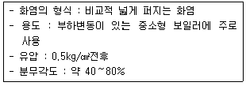
- 회전식
- 유압식
- 고압공기식
- 건타입식
(정답률: 62%)
28. C = 82(중량 %) , H = (중량 %), S =4(중량%)인 중유의 (CO2)max은 몇 %인가? (단, 표준상태 , 건조가스 기준)
- 약 20.6
- 약 17.6
- 약 14.8
- 약 12.1
(정답률: 69%)
29. 어떤 화학과정에서 반응물질이 25% 분해하는데 413분 걸린다는 것을 알았다. 이 반응이 1차라고 가정할 때 , 속도상수 k는?
- 1.437 × 10-4s-1
- 1.232 × 10-4s-1
- 1.161 × 10-4s-1
- 1.022 × 10-4s-1
(정답률: 85%)
30. 다음 가연물 중 자기 착화온도가 가장 높은 것은?
- 황린
- 파라핀 왁스
- 적린
- 황
(정답률: 60%)
31. 불꽃 점화기관에서의 연소과정 중 생기는 노킹현상을 효과적으로 방지하기 위한 기관구조에 대한 설명으로 가장 거리가 먼 것은?
- 3원촉매시스템을 사용한다.
- 연소실을 구형(circular type)으로 한다.
- 점화플러그는 연소실 중심에 부착시킨다.
- 난류를 증가시키기 위해 난류생성 pot를 부착시킨다.
(정답률: 64%)
32. 다음 그림은 연소시 공기 - 연료비에 따르는 HC , CO , CO2 , O2 의 발생량을 나타낸 것이다. ④ 의 항목에 해당되는 것은? (단, 실선은 이론 ,점선은 실제의 관계를 나타냄)
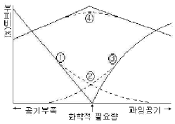
- O2
- HC
- CO2
- CO
(정답률: 74%)
33. 고체연료의 연소방법 중 유동층 연소법에 관한 설명으로 가장 거리가 먼 것은?
- 유동매체의 손실로 인한 보충이 필요하다.
- 조대 고형물의 경우도 투입을 위한 파쇄가 불필요하다.
- 로내에서 산성가스의 제거가 가능하다.
- 재나 미연탄소의 배출이 많다.
(정답률: 79%)
34. 석유류의 특성에 관한 설명 중 가장 거리가 먼 것은?
- 일반적으로 중질유는 방향족계 화합물을 30% 이상 함유하고 , 상대적으로 밀도 및 점도가 높은 반면 , 경질유는 방향족계 화합물을 10% 미만 함유하고 밀도 및 점도가 낮은 편이다.
- 일반적으로 API도가 100미만이면 경질유 , 400이상이면 중질유로 분류된다.
- 인화점이 낮은 경우에는 역화의 위험성이 있고 , 높을경우(140℃이상)에는 착화가 곤란하다.
- 인화점은 보통 그 예열온도보다 약 5℃이상 높은 것이 좋다.
(정답률: 72%)
35. A→ B+C 의 연소반응식에 있어서 반응개시 후 3분이 경과하였을 때의 A 의 농도는 몇 mol/L인가? (단, 위 반응은 1차반응(반응속도가 A농도에 1차로 비례)이며 , 속도상소(k)는 3.5×10-1min-1 A의 초기농도는 12mol/L
- 3.7
- 4.2
- 5.9
- 7.2
(정답률: 60%)
36. 연소시 발생되는 NOx는 원인과 생성기전에 따라 3가지로 분류하는데, 분류항목에 속하지 않는 것은?
- fuel NOx
- noxious NOx
- prompt NOx
- thermal NOx
(정답률: 74%)
37. 350m3되는 방에서 닫고 91%의 탄소를 가진 숯을 최소 몇 kg 이상을 태우면 해로운 상태가 되겠는가? (단, 공기중에 탄산가스의 부피가 5.8% 이상일 때 , 인체에 해롭다고 한다.)
- 약 10
- 약 12
- 약 14
- 약 16
(정답률: 69%)
38. 부탄과 에탄의 혼합가스 1Nm3를 완전연소 시킨 결과 배기가스 중 탄산가스의 생성량이 3.3Nm3이었다면 혼합가스중의 부탄과 에탄의 mol비(부탄/에탄)는?
- 2.19
- 1.86
- 0.54
- 0.46
(정답률: 79%)
39. 기체연료의 이론공기량(Sm3 /Sm3)을 구하는 식으로 옳은 것은? (단, H2, CO, CxHy, O2는 연료중의 수소, 일산화탄소, 탄화수소, 산소의 체적비를 의미한다.)
- 0.21{0.5H2 + 0.5CO + (x+y/4)CxHy - O2}
- 1/0.21{0.5H2 + 0.5CO + (x+y/4)CxHy - O2}
- 0.21{0.5H2 + 0.5CO + (x+y/4)CxHy + O2}
- 1/0.21{0.5H2 + 0.5CO + (x+y/4)CxHy + O2}
(정답률: 69%)
40. 기체연료의 연소방법에 대한 설명으로 가장 거리가 먼 것은?
- 확산연소는 화염이 길고 그을음이 발생하기 쉽다.
- 예혼합연소에는 포트형과 버너형이 있다.
- 예혼합연소는 화염온도가 높아 연소부하가 큰 경우에 사용이 가능하다.
- 예혼합연소는 혼합기의 분출속도가 느릴 경우 역화의 위험이 있다.
(정답률: 48%)
3과목: 대기오염 방지기술
41. 다음 특성을 가지는 산업용 여과재로 가장 적당한 것은?
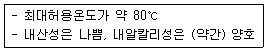
- Cotton
- Teflon
- Orlon
- Glass
(정답률: 58%)
42. 염소가스의 농도가 0.6%(부피비)되는 배출가스 500Nm3/hr를 수산화칼슘으로 처리하려고 할 때 , 이론적으로 필요한 시간당 수산화 칼슘량은?
- 4.67kg
- 5.82kg
- 7.89kg
- 9.91kg
(정답률: 62%)
43. 유해가스의 처리를 위한 흡착법에 사용되는 흡착제에 관한 설명으로 옳지 않은 것은?
- 활성탄이 가장 많이 사용되며 주로 극성물질에 유효한 반면 , 유기용제의 증기 제거능은 낮다.
- 실키카겔은 250℃이하에서 물과 유기물을 잘 흡착한다.
- 활성알루미나는 물과 유기물을 잘 흡착하며 175 ~ 325℃로 가열하여 재생 시킬 수 있다.
- 합성제올라이트는 극성이 다른 물질이나 포화정도가 다른 탄화수소의 분리가 가능하다.
(정답률: 62%)
44. 여과집진장치에 관한 설명으로 옳지 않은 것은?
- 다양한 여과재의 사용으로 설계시 융통성이 있다.
- 세정집진장치보다 압력손실과 동력소모가 적다.
- 여과재의 교환으로 유지비가 고가이다.
- 수분이나 여과속도에 대한 적응성이 높다.
(정답률: 65%)
45. 헨리의 법칙을 따르는 유해가스가 물속에 2.0kmol/m3만큼 용해되어 있을 때 , 분압이 258.4mmH2O이었다면, 이 유해가스의 분압이 57mmHg로 될 때의 물속의 유해가스 농도는? (단, 기타 조건은 변화없음)
- 10.0kmol/m3
- 8.0kmol/m3
- 6.0kmol/m3
- 4.0kmol/m3
(정답률: 54%)
46. 분무탑에 관한 설명으로 옳지 않은 것은?
- 흡수가 잘 되는 수용성 기체에 효과적이다.
- 분무액과 가스의 접촉이 균일하여 효율이 우수한 장점이 있다.
- 분무에 상당한 동력이 필요하고, 가스의 유출시 비말동반이 많다
- 침전물이 생기는 경우에 적합하며 , 충전탑에 비해 설비비 및 유지비가 적게 드는 장점이 있다.
(정답률: 42%)
47. 아래 후드 형식으로 가장 적합한 것은?
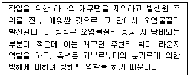
- 수(receiving)형후드
- 슬롯(slot)형 후드
- 부스(booth)형 후드
- 캐노피(canopy)형 후드
(정답률: 48%)
48. 덕트 설치시 주요원칙과 거리가 먼 것은?
- 덕트는 가능한 한 짧게 배치되로록 한다.
- 공기가 아래로 흐르도록 하향구배를 만든다.
- 밴드는 가능하면 90°가 되도록 한다.
- 밴드수는 가능한 한 적게 하도록 한다.
(정답률: 53%)
49. 전기집진장치의 유지관리에 관한 사항으로 옳지 않은 것은?
- 비저항이 높은 경우에는 건식집진장치를 사용하거나 NH3가스를 주입한다.
- 배기가스내 수분량이 증가할수록 먼지 비저항이 감소한다.
- 분진의 비저항이 낮으면(104Ωㆍ㎝이하) 분진 입자의 반발로 인해 분진은 가스중으로 재비산한다.
- 분진의 비저항이 높으면(1012Ωㆍ㎝이상)역전리현상이 발생하므로 집진효율은 감소한다.
(정답률: 50%)
50. 유체의 운동을 결정하는 점도(viscosity)에 대한 설명으로 옳은 것은?
- 온도가 증가하면 대개 액체의 점도는 증가한다.
- 온도가 감소하면 대개 기체의 점도는 증가한다.
- 액체의 점도는 기체에 비해 아주 크며 , 대개 분자량이 증가하면 증가한다.
- 온도에 따른 액체의 운동점도(kinematic viscosity)의 변화폭은 절대점도의 경우보다 넓다.
(정답률: 60%)
51. 흡인통풍의 장점으로 거리가 먼 것은?
- 굴뚝의 통풍저항이 큰 경우에 적합하다.
- 연소용 공기를 예열할 수 있다.
- 노내압이 부압(-)으로 역화의 우려가 없다.
- 통풍력이 크다.
(정답률: 60%)
52. 유해가스 처리를 위한 흡수액의 구비요건 중 가장 거리가 먼 것은?
- 휘발성이 낮아야 한다.
- 어는점이 높아야 한다.
- 점도가 낮아야 한다.
- 용해도가 커야 한다.
(정답률: 67%)
53. 악취처리방법에 관한 설명으로 옳지 않은 것은?
- 촉매연소법은 약 300~400℃ 의 온도에서 산화분해시킨다.
- 직접 연소법은 700~800℃에서 0.5초 정도가 일반적이다.
- 황화수소는 촉매연소로 처리가 불가능하다.
- 촉매에 바람직하지 않은 원소는 납, 비소, 수은 등이다.
(정답률: 50%)
54. 자동차후처리기술 중 삼원촉매장치에 관한 설명으로 옳지 않은 것은?
- CO, HC, NOx 성분을 동시에 80%이상 저감시킬 수 있다.
- CO, HC, NOx 성분을 동시에 저감시키기 위해서는 엔진에 공급되는 공기 연료비가 이론공연비로 공급되어야 한다.
- 최근에는 백금, 로듐에 팔라듐을 포함하여 사용하는 추세이다.
- 로듐은 주로 CO, HC를 저감시키는산화반응을 촉진시키고, 백금은 NO 반응을 촉진시킨다.
(정답률: 50%)
55. 배출가스량이 3600m3/hr 이고 , 가스온도 150℃ , 압력 500mmHg , 함진농도 10g/m3인 배출가스를 처리하는 집진장치에서 출구의 함진농도를 0.2g/Sm3로 하기 위하여 필요한 집진율은 약 몇 %인가?
- 96.55%
- 97.15%
- 98.55%
- 99.15%
(정답률: 36%)
56. 불소화합물 처리에 관한 설명으로 거리가 먼 것은?
- 물에 대한 용해도가 비교적 크므로 수세에 의한 처리가 적당하다.
- 충전탑과 세정장치가 적절하다.
- 스프레이탑을 사용할 때에 분무 노즐의 막힘이 없도록 보수관리에 주의가 필요하다.
- 처리중 고형물을 생성하는 경우가 많다.
(정답률: 69%)
57. 광성충돌계수(효과)를 크게 하기 위한 입자배출원의 특성 및 운전조건으로 적당하지 않은 것은?
- 분진의 입경이 커야 한다.
- 처리가스와 액적의 상대속도가 커야 한다.
- 처리가스의 온도가 높아야 한다.
- 액적의 직경이 작아야 한다.
(정답률: 43%)
58. 어떤 공장의 연마실에서 발생되는 배출가스의 먼지제거에 cyclone 이 사용되고 있다. 유입폭이 30cm 이고, 유효회전수 6회, 입구유입속도 8m/s로 가 동중인 공정조건에서 10㎛ 먼지입자의 부분집진효율은 몇 %인가? (단, 먼지의 밀도는 1.6g/cm3, 가스점도는 1.75×10-4 g/cmㆍs, 가스밀도는 고려하지 않음)
- 38
- 51
- 73
- 82
(정답률: 56%)
59. 유동상 흡착장치에 관한 설명으로 옳지 않은 것은?
- 가스의 유속을 크게 할 수 있다.
- 흡착제의 마모가 적다.
- 가스와 흡착제를 향류접촉 시킬 수 있다.
- 주어진 조업조건의 변동이 어렵다.
(정답률: 67%)
60. 다음 중 송풍기의 관한 법칙 표현으로 옳지 않은 것은? (단, 송풍기의 크기와 유체의 밀도는 일정하며, Q: 풍량, N: 회전수, W: 동력, V: 배출속도, △P: 정압)
- W1 / N13 = W2/N23
- Q1/N1 = Q2/N2
- V1/N13 = V2/N23
- △P1 /N12 = △P2/N22
(정답률: 73%)
4과목: 대기오염 공정시험기준(방법)
61. 대기오염공정시험방법상 흡광광도법에서 사용되는 흡수셀의 재질에 따른 사용 파장법위로 옳은 것은?
- 유리제는 근적외부 파장범위
- 석영제는 가시부 및 근적외부 파장범위
- 플라스틱제는 자외부 파장범위
- 플라스틱제는 가시부 파장범위
(정답률: 47%)
62. 대기오염공정시험방법에 명시된 다음 설명으로 옳은 것은?
- “감압”이라 함은 따로 규정이 없는 한 15mmH2O 이하를 뜻한다.
- 표준품을 채취할 때 표준액이 정수(整數)로 기재되어 있어도 실험자가 환산하여 기재수치에 “ 약 ” 자를 붙여 사용할 수 있다.
- 상온은 1 ~ 5 ℃ , 실온은 15 ~ 25℃이다.
- “냉후”라 표시되어 있을 때는 보온 또는 가열후 상온까지 냉각 된 상태를 뜻한다.
(정답률: 40%)
63. NaOH용액을 흡수액으로 사용하는 분석대상가스가 아닌 것은?
- 벤젠
- 페놀
- 시안화수소
- 염화수소
(정답률: 42%)
64. 비분산 적외선 분석법에 적용되는 용어의 정의로 옳지 않은 것은?
- 정필터형: 측정성분이 흡수되는 적외선을 그 흡수파장에서 측정하는 방식
- 반복성: 동일한 분석계를 이용하여 다른 측정대상을 동일한 방법과 조건으로 비교적 장시간에 반복적으로 측정하는 경우에 측정치의 일치정도
- 비교가스: 시로셀에서 적외선 흡수를 측정하는 경우 대조가스로 사용하는 것으로 적외선을 흡수하지 않는 가스
- 비분산: 빛을 프리즘이나 회절격자와 같은 분산소자에 의해 분산하지 않는 것.
(정답률: 42%)
65. 다음은 이온크로마토그래피의 원리 및 적용범위에 관한 설명이다. ( )안에 가장 알맞은 것은?
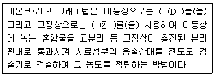
- ① 액체 ② 전해질
- ① 전해질 ② 액체
- ① 액체 ② 이온교환수지
- ① 이온교한수지 ② 액체
(정답률: 59%)
66. 비산먼지 측정방법 중 불투명도법에 관한 설명으로 옳은 것은?
- 측정자는 건물로부터 배출가스를 분명하게 관측할 수 있는 1km 이내의 거리에 위치해야 한다.
- 비탁도는 최소 0.1도 단위로 측정값을 기록한다.
- 입자상 물질이 건물로부터 제일 적게 새어나오는 곳을 대상으로 하여 측정한다.
- 비탁도에 10%를 곱한 값을 불투명도 값으로 한다.
(정답률: 43%)
67. 가스크로마토 그래피법을 이용하여 배출가스 중의 벤젠을 분석하는 방법으로 가장 거리가 먼 것은?
- 고체흡착 열탈착법
- 고체흡착 용매추출법
- 액체흡착 용매탈착법
- 테들라 백 - 열탈착법
(정답률: 32%)
68. 굴뚝 배출가스 내의 질소산화물의 분석방법 중 페놀디술폰산법에 의한 농도 계산식으로 옳은 것은? (단, C = 질소산화물의 농도(V/V ppm)Vs = 시료가스 채취량(mL)(0℃ 760mmHg)n = 분석용 시료용액의 희석배수 v = 검량선에서 구한 질소산화물(mL))
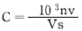
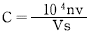
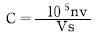
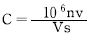
(정답률: 37%)
69. 굴뚝 배출가스 중의 황화수소 분석 방법에 대한 설명으로 옳지 않은 것은?
- 메틸렌 블루우법은 황화수소를 질산암모늄을 가한 황산에 흡수시켜 생성되는 메틸렌 블루우의 흡광도를 측정하는 방법이다.
- 메틸렌 블루우법은 시료중의 황화수소가 5 ~ 1000ppm함유되어 있는 경우의 분석에 적합하며 선택성이 좋고 예민하다.
- 요오드 적정법은 시료중의 황화수소가 100 ~ 2000ppm 함유되어 있는 경우의 분석에 적합하다.
- 요오드 적정법은 다른 산화성가르솨 환원성가스에 의하여 방해를 받는다.
(정답률: 42%)
70. 굴뚝배출가스 중의 오염물질과 연속자동측정방법과의 연결로 옳지 않은 것은?
- 아황산가스 - 불꽃광도법
- 염화수소 - 이온전극법
- 질소산화물 - 적외선흡수법
- 불화수소 - 자외선흡수법
(정답률: 54%)
71. 굴뚝 덕트 등을 통아혀 대기중으로 배출되는 가스상 물질을 분석하기 위한 시료 채취방법에 대한 주의사항 중 옳지 않은 것은?
- 채취에 종사하는 사람은 보통 2인 이상을 1조로 한다.
- 옥외 작업시 바람방향을 확인하여 바람이 부는 쪽으로 작업하는 것이 좋다.
- 채취위치 주변에 배전 , 급수설비는 배제하는 것이 좋다.
- 굴뚝내의 압력이 매우 큰 부압(-300mmH2O 정도 이하)인 경우에는 , 시료 채취용 굴뚝을 부설하여 , 용량이 큰 펌프를 써서 시료가스를 흡입하고 그 부설한 굴뚝에 채취구를 만든다.
(정답률: 38%)
72. 가스크로마토그래피법에 관한 설명으로 옳지 않은 것은?
- 기체시료 또는 기화한 액체나 고체시료를 운반가스에 의하여 분리, 관내에 전개, 응축시켜 액체상태로 각 성분을 분리 분석한다.
- 일반적으로 대기의 무기물 또는 유기물을 포함하고 있는 오염물질에 대한 정성, 정량분석에 이용된다.
- 일정유량으로 유지되는 운반가스는 시료도입부로부터 분리관내를 흘러서 검출기를 통해 외부로 방출된다.
- 시료도입부로부터 기체 , 액체 또는 고체시료를 도입하면 기체는 그대로, 액체나 고체는 가열기화되어 운반가스에 의하여 분리관내로 승입된다.
(정답률: 39%)
73. 질산은 적정법으로 시안화수소를 분석할때의 필요시약과 거리가 먼 것은?
- 수산화나트륨 흡수액
- N/100 질산은 용액
- p- 디메틸 아미노 벤지리덴 로다닌
- 차아염소산 나트륨 용액
(정답률: 36%)
74. 굴뚝 배출가스 중 염소를 오르토톨리딘법으로 분석한 결과치가 다음과 같을 때, 염소농도(ppm)는? (단, 건조시료가스량: 100mL이고, 분석용 시료용액 200mL에서 표준액의 흡광도는 0.4 시료용액의 흡광도: 0.45이다.)
- 9.46
- 10.33
- 11.25
- 12.46
(정답률: 42%)
75. 굴뚝 배출가스 내의 시안화수소 분석방법 중 질산은적정법에서 초산(10V/V%)을 첨가하는 목적으로 가장 적합한 것은?
- 색의 변화를 알기 위하여
- pH의 조절을 위하여
- 폭발의 위험을 막기 위하여
- 방해 물질을 제거하기 위하여
(정답률: 55%)
76. 가스 유속을 측정한 결과가 다음과 같을 대 배출가스 유속은?
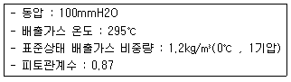
- 43.7m/s
- 48.2m/s
- 50.7m/s
- 54.3m/s
(정답률: 50%)
77. 굴뚝 배출가스 중의 일산화탄소 분석방법으로 옳지 않은 것은?
- 비분산적외선 분석법의 정량범위는 0~150ppm부터 0~5%이다.
- 정전위 전해법의 정량범위는 0~20ppm부터 0 ~3%이다.
- 정전위 전해법에서 프로판 100ppm의 간섭영향 시험용가스를 도입하였을 때 그 영향이 1ppm 이하이어야 하지만, 0~10ppm 측정범위에서는 0.5ppm 이하로 한다.
- 비분산 적외선 분석법에서는 계측기가 안정한 시점에서 지시치를 측정범위의 최대 눈금값의 1/100까지 읽어준다.
(정답률: 30%)
78. 환경대기중의 먼지농도를 측정하기 위한 방법 중 아래에서 설명하는 시험방법으로 가장 적절한 것은?
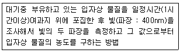
- 광산란법
- 하이볼륨 에어 샘플러법
- 베타선 흡수법
- 광투과법
(정답률: 60%)
79. 굴뚝 배출가스 중 수분량이 체적백분율로 10% 이고 배출가스의 온도는 80℃, 시료채취량은 10L, 대기압은 0.6기압, 가스미터의 게이지압은 25mmHg, 가스미터온도 80℃에서의 수증기포화압이 255mmHg 라 할때, 흡수된 수분량(g)은?
- 0.459
- 0.328
- 0.2⑤
- 0.147
(정답률: 32%)
80. 고용량 공기포집기(High Volume Air Sampler)를 사용하여 비산먼지를 측정할 때의 설명으로 옳지 않은 것은?
- 시료채취는 1회 1시간 이상 연속 채취한다.
- 풍속이 0.5m/초 미만일 경우는 원칙적으로 시료채취하지 않는다.
- 풍향풍속계에 연속기록장치가 없는 경우 적어도 20분 간격으로 3회 이상 풍향풍속을 측정하여 기록한다.
- 전 시료채취 기간 중 주 풍향이 900 이상 변할 때 풍향에 대한 보정계수는 1.5로 한다.
(정답률: 45%)
5과목: 대기환경관계법규
81. 대기오염경보단계별 오염물질의 농도기준에 있어 오존농도는 몇시간 평균농도를 기준으로하는가?
- 1시간
- 2시간
- 8시간
- 24시간
(정답률: 39%)
82. 대기환경보전법상 제작차배출허용기준에 맞지 아니하게 자동차를 제작한 자에 대한 벌칙기준은?
- 7년 이하의 징역이나 1억원 이하의 벌금에 처한다.
- 5년 이하의 징역이나 3천만원 이하의 벌금에 처한다.
- 1년 이하의 징역이나 500만원 이하의 벌금에 처한다.
- 300만원 이하의 벌금에 처한다.
(정답률: 50%)
83. 대기환경보전법령상 대기오염 경보단계별 조치사항에 포함된 것으로 가장 거리가 먼 것은?
- 주의보 발령 : 자동차 사용제한 명령
- 경보발령 : 사업장의 연료 사용량 감축권고
- 중대경보발령 : 주민의 실외활동 금지요청
- 중대경보발령 : 사업장의 조업시간 단축명령
(정답률: 57%)
84. 대기환경보전법규상 대기오염물질배출시설에 관한 사항으로 거리가 먼 것은?
- 건조시설 중 옥내에서 태양열 등을 이용하여 자연건조 시키는 시설은 배출시설에서 제외한다.
- “ 원료”라 함은 제품제조에 필요한 주원료와 기타 각종 첨가제 등 부원료를 하한 것을 말한다.
- “고체입자상물질”이라 함은 입자의 크기가 지름 1㎛이하인 것에 한한다.
- 배출시설의 규모는 당해시설의 최대시설용량(최대시설 규모)을 말한다.
(정답률: 47%)
85. 악취방지법규상 지정악취물질의 배출허용기준 및 그 범위로 옳지 않은 것은?
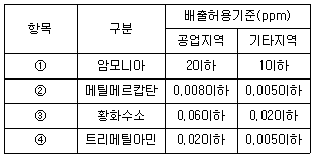
- ①
- ②
- ③
- ④
(정답률: 34%)
86. 다중이용시설 등의 실내공기질관리법규상 신축 공동주택의 실내공기질 권고기준으로 옳지 않은 것은?
- 톨루엔 : 1000㎍/m3이하
- 에틸벤젠 : 360㎍/m3이하
- 자일렌 : 600㎍/m3이하
- 스티렌 : 300㎍/m3이하
(정답률: 39%)
87. 대기환경보전법상 환경기술인 등의 교육을 받게 하지 아니한 자에 대한 과태료 부과기준은?
- 30만원 이하
- 50만원 이하
- 100만원 이하
- 200만원 이하
(정답률: 50%)
88. 대기환경보전법규에 따른 배출시설의 변경신고를 하여야 할 경우에 해당되지 않는 것은?
- 배출시설을 폐쇄하는 경우
- 종전의 연료보다 황함유량이 낮은 연료로 변경하는 경우
- 사업장의 명칭을 변경하는 경우
- 배출시설을 동종 동일규모의 시설로 대체하는 경우
(정답률: 53%)
89. 대기환경보전법상 배출시설을 설치 운영하는 사업자에게 조업정지를 명하여야 할 경우로서 그 조업정지가 공익에 현저한 지장을 줄 우려가 있다고 인정하는 경우, 조업정지 처분에 갈음하여 환경부장관이 부과할 수 잇는 최대 과징금 액수는?
- 5000만원
- 1억원
- 2억원
- 5억원
(정답률: 67%)
90. 대기환경보전법규상 환경기술인의 준수사항과 가장 거리가 먼 것은?
- 배출시설 및 방지시설을 정상가동하여 오염물질 등의 배출이 배출허용기준에 적합하도록 하여야 한다.
- 배출시설 및 방지시설의 운영에 관한 업무일지를 사실에 기초하여 작성해야 한다.
- 기업활동 규제완화에 관한 특별조치법상 환경기술인을 공동으로 임명한 경우라도 당해 환경기술인은 해당 사업장에 번갈아 근무해서는 안된다.
- 자가측정시 사용한 여과지는 대기오염공정시험방법에 따라 기록한 시료채취기록지와 함께 날짜별로 보관 관리하여야 한다.
(정답률: 69%)
91. 악취방지법규상 지정악취물질의 종류 중 그 적용시기가 다른 하나는?
- 프로피온알데하이드
- 다이메틸다이설파이드
- 메틸아이소뷰티르케톤
- 스타이렌
(정답률: 42%)
92. 대기환경보전법령상 대기 배출시설설치신고서에 첨부하여야 하는 서류로 가장 거리가 먼 것은?
- 방지시설의 일반도
- 방지시설의 연간 유지관리계획서
- 배출시설 및 방지시설의 설치 내역서
- 원료 사용량 및 오염물질 등의 배출량 예측 내역서
(정답률: 40%)
93. 대기환경보전법규상 시 도지사가 설치하는 대기오염 측정망에 해당하지 않는 것은?
- 도시지역의 휘발성유기화합물 등의 농도를 측정하기 위한 광화학오염물질 측정망
- 도시지역의 오염물질의 농도를 측정하기 위한 도시대기측정망
- 도시의 시정장애의 정도를 파악하기 위한 시정거리 측정망
- 대기중의 중금속 농도를 측정하기 위한 대기 중금속 측정망
(정답률: 38%)
94. 대기환경보전법규상 비산먼지 발생을 억제하기 위한 시설의 설치 및 필요한 조치에 관한 기준 중 야적(분체상 물질을 야적하는 겨우에 한한다.) 공정에 관한 설명으로 옳지 않은 것은?
- 야적물질을 1일 이상 보관하는 경우 방진덮개로 덮을 때
- 야적물질의 최고저장높이의 1/3 이상의 방진벽을 설치 할 것
- 야적물질의 최고저장높이의 1.25배 이상의 방진망(막)을 설치 한 것
- 야적물질로 인한 비산먼지 발생억제를 위하여 고철야적장과 수용성물질 등의 경우 물을 뿌리는 시설을 설치할 것
(정답률: 36%)
95. 대기환경보전법령상 부과금 등의 부과면적에 관한 기준이다. ( )안에 알맞은 것은?
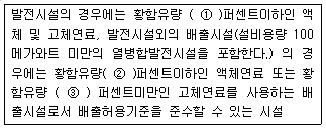
- ① 0.3 ② 0.5 ③0.6
- ① 0.1 ② 0.5 ③0.45
- ① 0.1 ② 0.3 ③0.45
- ① 0.3 ② 0.5 ③0.45
(정답률: 36%)
96. 대기환경보전법에서 사용하는 용어의 정의로 틀린 것은?
- “가스”란 물질이 연소 합성 분해될 때에 발생하거나 물리적 성질로 인하여 발생하는 기체상물질을 말한다.
- “ 입자상물질” 이란 물질이 파쇄 , 선별 ,퇴적 , 이적될 때 , 그 밖에 기계적으로 처리되거나 연소 ,합성 ,분해 될 때 발생하는 고체상 또는 액체 상의 미세한 물질을 말한다.
- “ 먼지 ” 란 대기 중에 떠다니거나 흩날려 내려오는 입자상물질을 말한다.
- “ 검댕”이란 연소 할때 생기는 유리탄소가 응결하여 입자의 지름이 10미크론 이상이 되는 입자상물질을 말한다.
(정답률: 47%)
97. 대기환경보전법령상 초과부과금의 부과대상이 되는 오염물질의 종류에 해당하지 않는 것은?
- 염화수소
- 이산화탄소
- 질소산화물
- 시안화수소
(정답률: 44%)
98. 대기환경보전법규상 먼지 , 황산화물 및 질소산화물의 연간 발생량 합계가 18톤인 시설의 자가측정 횟수 기준은? (단, 특정유해물질이 포함되지 않음)
- 주1회 이상
- 월 2회 이상
- 매 2월 1회 이상
- 매분기 1회 이상
(정답률: 50%)
99. 대기환경보전법령상 기본부과금의 부과기준으로 옳은 것은?
- 매월별로 부과
- 매분기별로 부과
- 매반기별로 부과
- 매년부과
(정답률: 34%)
100. 대기환경보전법규상 분체상 물질을 싣고 내리는 공정의 경우 , 비산먼지 발생을 억제하기 위해 작업을 중지해야 하는 평균풍속(m/s)의 기준은?
- 5이상
- 8이상
- 10이상
- 15이상
(정답률: 65%)